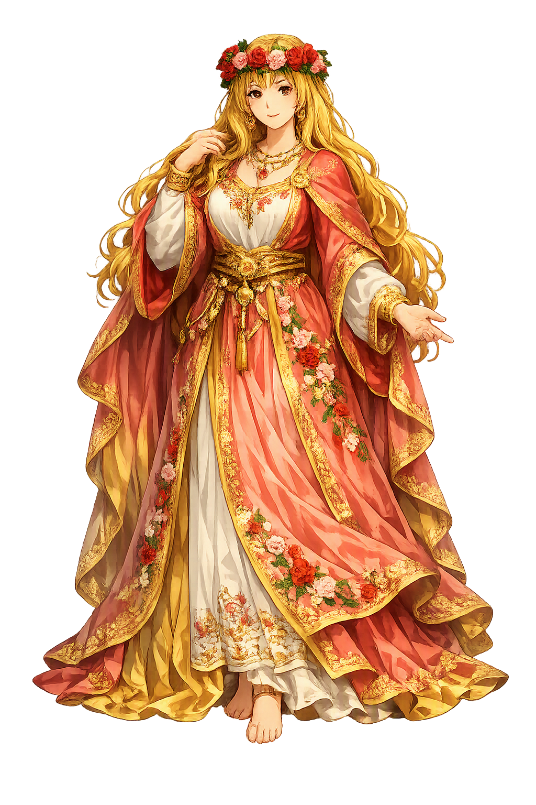

Stories of Lada
No medieval Slavic text tells a myth of Lada. What survives is a trail of witnesses — a funeral play, a chronicler's glosses, Renaissance mythography, and living spring songs — from which scholarship must carefully separate memory from invention. Her 'mythology' is therefore the history of how a song-cry became a goddess, and an honest temple must tell it that way.
The oldest trace of Lada is not a story about her but a word sung in her place. In the spring round-dances of the South Slavs on Jurjevo — St George's Day, 6 May, when the grazing season opens — the cry Lado! punctuates the melody: greeting, praise, chorus, or the goddess herself, the sources never say. Young people cut the green oak, the zelenika, dance around it, and carry it to the pasture; nineteenth-century ethnographers among Croats, Serbs, and the Balkan Roma recorded the songs with the refrain intact. Farther north the same word softens into endearment: in Polish and Ukrainian wedding songs ladko and lado mean simply 'dear one.' The earliest stratum of the evidence is thus not narrative but music.
If Lada was ever a full goddess, her first body was a song — which is why she has survived every empire that buried her chroniclers.
The first text to list Lada among the gods is a joke at her expense. The Kraków school drama Pogrzeb świętej Roksany ('The Funeral of St. Roxane'), composed around 1500 and printed in 1535, brings together three students — a German, a Czech, and a Pole — to argue over whose hero deserves burial. The Pole defends his own ancestors: our gods, he insists, were Lada, Lel, and Polel, and our songs still remember them. The comedy mocks him for clinging to heathenry; but mockery preserves what reverence forgot, and the schoolboy's boast is now our earliest catalogue of Slavic divine names. The sources disagree even here: the play pairs Lada with Lel and Polel, while later writers split the twins differently and added genealogies no one attests.
A goddess remembered in ridicule is still remembered — the play is less evidence of cult than of a name refusing, two centuries after conversion, to disappear.
Jan Długosz, the fifteenth-century Polish annalist, inserted into his Annales (Book I) marginal glosses on the old religion: the pagan Poles, he claims, used Lado for God himself, and among their goddesses he names Lada — glossing her, erratically, as Venus. The glosses, transmitted in the copy made by Stanisław Komasius, equate the native names so inconsistently that no modern scholar trusts the identifications. Later Renaissance mythography repeated and inflated them: Marcin Kromer's Polonia (1555), Maciej Stryjkowski's Kronika (1582) — which makes Lada a goddess of love — and Stanisław Sarnicki (1585) and Szymon Starowolski (1615), who repeat the lore with growing confidence. None of them cites a source older than folk memory.
The chroniclers did not record Lada; they manufactured her — a caution this temple must carry at its threshold.
The nineteenth century decided the question by enthusiasm. Alexander Afanasyev's Poetic Views of the Slavs on Nature (1865–1869) enthroned Lada as a great goddess of spring and love, flanked by her twin sons Lel and Polel; Šafařík and Krek spread the picture across Slavdom, and Romantic art gave her a face. Twentieth-century scholarship pulled back hard: Michał Gieysztor's Mitologia Słowian (1982) keeps her cautiously, while Leszek P. Słupecki's Religia Słowian (2018) and other critics argue that the attestations are too late and too folkloric — that lado may never have been more than a refrain-word, with Lada its feminine form, like the wedding cry ladno still heard in Serbia. Comparatists set her beside the Greek Horai and the Latvian Laima, but no genetic link can be proven.
The tradition is fragmentary and the sources openly disagree — and the debate itself, still alive, is the closest thing Lada has ever had to a cult.
Love
Lada is the Slavic goddess of love, harmony, and spring — or perhaps a folk-song cry that the chroniclers turned into a goddess. Every written source naming her is late: medieval glosses, a Renaissance school play, and spring refrains sung on Jurjevo (St George's Day). Her divine status is debated; her presence in the song tradition is not.
The name rides on Slavic *ladъ, 'order, harmony, concord' — love conceived as the harmonizing force, not mere desire.
Stryjkowski's Kronika (1582) names her the Slavic goddess of love; folk tradition keeps her in wedding songs as the beloved 'lado'.
Her oldest witnesses are alive: the refrain 'Lado!' still rings through Đurđevdan / Jurjevo round-dances in the Balkans each May.
Preserved as a flagship temple despite the unregistrable plain-ASCII form.
From the original script to the living URL
Lada
The name survives in scholarly transliteration. Lada is the standard Slavic romanisation, documented in academic sources — “Lady, order”. Because the spelling uses only Latin letters, the form is the same in both ASCII and Unicode.
No indigenous writing system is securely attested for individual slavic names. The form shown is a modern scholarly transliteration.
lada
The plain lada form is identical to the Unicode restoration. Because this name is already written in Latin letters, no diacritics, stress, or script information were lost — only capitalization differs.
Lada
The Unicode restoration does not need to recover lost marks for Lada. Its value is canonical spelling and consistent cataloguing, not the reconstruction of erased orthography. The domain is readable as-is to both DNS and humanity.
Lada.com
This restoration is written entirely in ASCII letters — no Punycode encoding stands between Lada and the DNS. The domain reads identically to machines and to human eyes.
Owned, ideal, and ASCII forms of Lada
Lada
The full Unicode restoration. lada.com is not in the PuniCodex collection — it is watched for release; if it drops, this temple upgrades to an owned flagship.
How Lada was spoken
How Lada is preserved in writing
No indigenous writing system is securely attested for individual slavic names. The form shown is a modern scholarly transliteration.
Contribute scholarly provenance →Most goddesses in this lexicon were carved, inscribed, or sung into epics; Lada survives in the one medium memory never loses — the chorus. Hers is a strange immortality: the sources that name her are late, contradictory, and partly fraudulent, yet the refrain they record is older than any of them, still sung on a Balkan hillside every May. The lesson she teaches is about evidence itself. A word repeated at weddings and spring fires for a thousand years need not have been a god to be holy; ritual can consecrate a syllable. To study Lada is to watch scholarship and devotion negotiate: the scholar asks 'goddess or refrain?', the grandmother answers 'Lado!' — and both are keeping the tradition alive, which may be what tradition is. Her temple, honestly built, is a round dance with no image at its center.
Enter Extended Lore